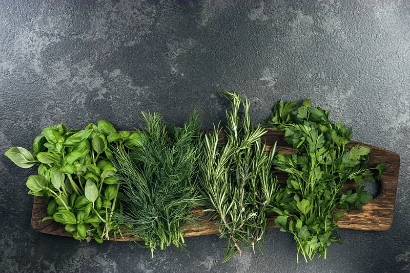
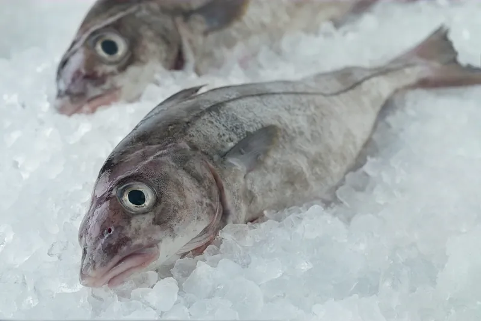

Named for the lesser tide.
Twice each lunar month the sea grows quiet. The moon stands at quarter, the pull slackens, and the water barely breathes. We are named for that hour.
There are fourteen seats, one counter, and a menu we do not so much write as take down in dictation. The boats decide the nouns. We argue about the adjectives.
When the sea moves, so does the cooking: — courses at spring tide. When it rests, we rest with it: — at neap. Nothing is served that did not come up the slip that morning, and nothing is written down until it has.

The moon says.
The moon keeps its own book.
Nothing travels farther than the tide line.



The morning the water turned silver — herring running ahead of the flood.
The counter holds fourteen.
Bookings open at noon on the first of the month, two months out. The tide does not wait; neither do the seats.